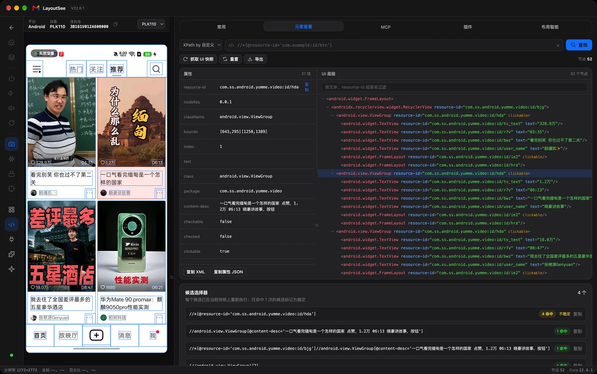
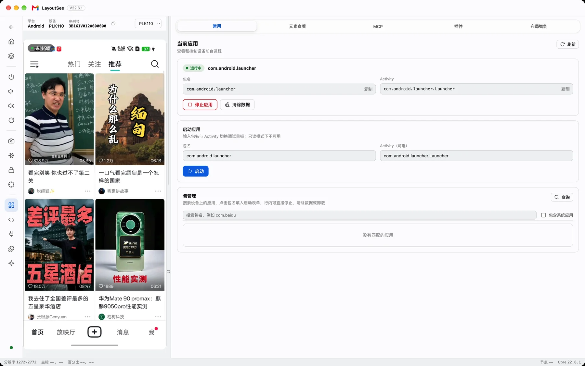
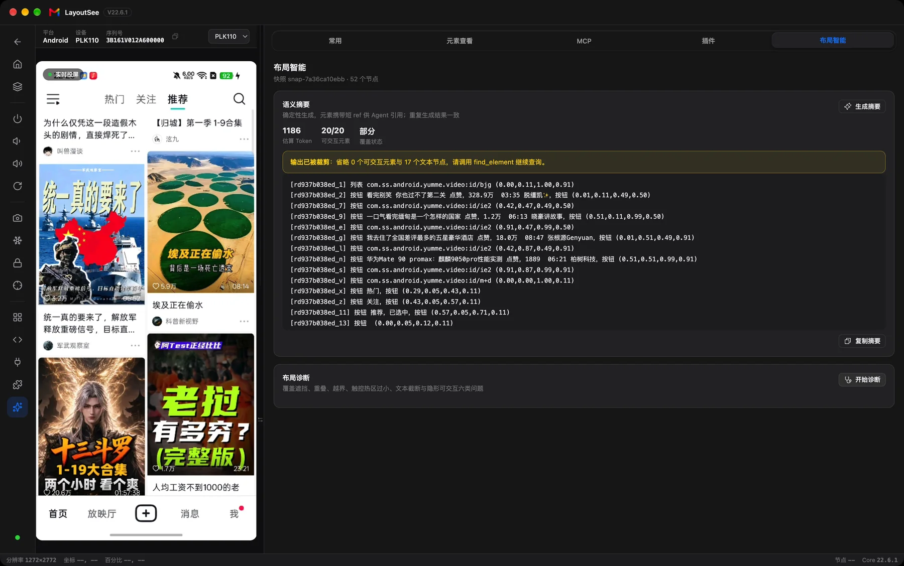
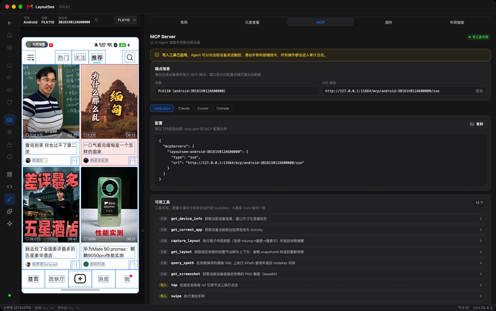

你好，我是 LayoutSee
让 Agent 感知视图，触摸界面。SEE THE LAYOUT · TOUCH THE SCREEN
开发者的布局工作台
投屏操控、视图树、XPath、诊断，在一个窗口里完成。
For AgentsAgent 的视图感知 MCP
12 个内置工具把 Android 真机交给 AI，看得见、摸得着。
快速上手
三步，把真机接进工作流。
- 01 下载桌面版 Apple Silicon 与 Intel 双架构 DMG，拖入 Applications 即用。
- 02 连接 Android 真机 开启开发者选项与 USB 调试，插线授权后自动发现设备。
- 03 交给 Agent 在 MCP Tab 复制配置，粘贴进 Claude / Cursor / Comate 即可开工。
设备接入依赖 adb：brew install android-platform-tools，也可在设置中指定已有路径。
从看见，到动手
抓取页面 → 读取结构 → 定位元素 → 操作设备 → 再次验证。
-
01 感知 文本、resource-id、父子层级、边界与交互属性一起读取；截图保留视觉上下文，视图树提供结构证据。
-
02 定位 按文本、描述、resource-id 或 XPath 查找，拿到短引用 ref，把一句「点登录」落到当前快照里的具体控件。
-
03 触摸 用 tap、swipe、input_text 操作真机，再抓取新快照验证结果；只读模式与操作审计让过程可控。
-
04 诊断 重叠、遮挡、越界、热区过小、文本截断、隐形可交互——六类问题返回涉及节点与量化证据。
人也有同一张工作台
点画面，树上定位；选节点，画面高亮。




交给 Agent
12 个内置工具，9 读 3 写；每台在线设备都有独立 SSE 端点。
感知页面 01
一次抓取，页面骨架与细节都在
capture_layout
get_layout
get_layout_summary
定位控件 02
把一句话落到当前快照里的元素
find_element
query_xpath
检查布局 03
六类问题，量化证据
diagnose_layout
操作真机 04
只读模式可拦截，操作全审计
tap
swipe
input_text
补充上下文 05
设备信息、前台应用与截图
get_device_info
get_current_app
get_screenshot
开启只读模式后，写操作会被拦截；页面变化后应重新抓取，使用新快照中的 ref。配置在设备工作台的 MCP Tab 复制，粘贴到支持 MCP 的客户端即可。
更新日志
新版本与说明都发布在 GitHub Releases。
开源共建
代码在 GitHub，问题与想法都欢迎。
致谢 — Android 设备接入与投屏能力基于 uiautomator2、scrcpy 等开源项目；设备接入层参考并二次开发自 uiautodev。